The Enemy
"Your destruction is the will of the gods, and we are their instrument." — Believed to be the words of Truth at the start of the war.
The Covenant, often referred to as the Covenant Empire or Covenant Hegemony, was a vast religious alliance that controlled a significant portion of the Orion Arm in our galaxy for thousands of years. Initially, it was a coalition between the San'Shyuum (Prophets) and the Sangheili (Elites), but over time, it expanded to include six other species: the Huragok, Mgalekgolo (Hunters), Unggoy (Grunts), Kig-Yar (Jackals), Yanme'e (Drones), and Jiralhanae (Brutes). These diverse species united in their worship of the mythological "Forerunners".
Know Your Enemy
FILE: #289055-39 Perosus latrunculus: Kig-Yar AKA Jackals
Other Names: Buzzards, Chickens, Turkeys, Vultures.
- Threat Level: Medium
- Classification: Mercenary/Foot Soldiers/Scout/Sniper
Intelligence
UNSC designation: Covenant secundarium carnivora prœdonis, Latin for "Covenant secondary carnivorous combatant" The Office of Naval Intelligence has designated the following species as "Jackals", as it is a name preferred by troops. These dinosaur-like, saurian beings that exhibit a scavenger nature, resembling privateers. ONI commonly identifies two main groupings—(Jackals and Skirmishers).
In combat, they typically serve as snipers and scouts due to their exceptional senses of sight, smell, and hearing. they appear to hold a low standing in the Covenant hierarchy, they operated as mercenaries, often siphoning resources for their own use while. Kig-Yar primarily serve as light infantry, and marksmen. they have been said to give off a salty smell. the female veriaty apear to act as commanders in battle, leading to ONI beliving they are a matriarchal meaning females are leaders we have to assume they are more dangerous.
Biology
Jackal share many features with Earth avians and reptiles, though ONI mistakenly classified them as K9 like until an atopsy was preformed. They exhibit characteristics common among species that evolved in low-gravity, such as Lacerta erectus. Their legs are sinewy and muscular, structured in a digitigrade manner. They possess very sharp teeth and a hooked, bird-like beak in some cases. Both their hands and feet are tridactyl, with sharp talons, and their hands have a unique structure with a large middle finger surrounded by two opposable thumbs. Their eyes are protected by a membrane that sweeps horizontally across the eye much like a bird of prey. Starved Jackal Kig-Yar have been known to eat the flesh of fallen enemies. They possess extraordinarily acute senses of sight, hearing, and smell. Highly agile, they can execute swift jumps and rolls in combat, particularly the more muscular Skirmisher subspecies, (witch seems to have been obseved to have a higher rank in whatever class system the Covanant posseses.) can leap great distances and move at extremely high speeds. a Jackal, are known for their strong, salty, and occasionally acrid stench. Male Jackal possess plumes of spiny quills (feathers if Skirmishers) at the back of their heads and on their elbows; the color of this plumage reflects their mood. Quill colors vary between subspecies, with Jackal quills typically appearing brown, red, or light blue, while Skirmishers generally have black or reddish feathers. females lack these quills, having instead calloused plates on their forearms and at the back of their heads. This thick skin protects them during courtship, as males often bite and tear at the back of the female's head, neck, and arms. Aside from reproductive organs, there is no significant physical difference between male and female Jackals. While Jackal are somewhat physically frail, they can move quickly to evade harm. Their blood is bright purple, They lack high amounts of calcium in their skeletons.
Advice to Civilians
If encountered, it is best to retreat. Though Given their speed, it is unlikely you can get away without a vehicle. If they confront you in close quarters, a blunt weapon can be effective as Jackals are somewhat physically frail with bones similar to birds.
Caution: Do not hide from Jackals, as their sense of smell is acute. If hiding is necessary, barricade all entrances and wait for UNSC forces while masking your scent. They are opportunistic and will move on if prey is too difficult to get to.
FILE: #289055-34 Monachus frigus: Unggoy AKA Grunts
Other Names: Chimpcrab, Gas-sucker, Gas-pig, Lobster-Monkey
- Threat Level: Minor
- Classification: Foot Soldier
Intelligence
The Office of Naval Intelligence has designated the following Covenant species as "Grunts," named for the role they play in combat. Grunts are a sapient species of squat, bipedal xeno-arthropodal vertebrates. Their vision and hearing are average, but they have a keen sense of smell, aided by olfactory membranes in their masks. Grunts are adept climbers on rocky terrain, though clumsy when walking upright. Their rigid exoskeleton, lined with sharp barbs, provides protection against predators, and they have quick finger reflexes, enabling them to fire plasma pistols rapidly.Although they require an atmosphere to breathe, Unggoy are capable of surviving in the vacuum of space without sealed, full-body gear. However, they must employ sealed face masks in order to breathe, as well as presumably to protect their facial tissues.
Biology
The taxonomic classification of the Grunts has confused the UNSC, which misclassified them as arthropods due to their exoskeletons. However, they are actually xeno-arthropodal vertebrates with a closed circulatory system, potentially influenced by primate-like amphibians from planetary dark zones. This incorrect nomenclature persisted into 2557, though concerns were overshadowed by the Human-Covenant War. they are the only Covenant species to breathe methane rather than oxygen. They could be afflicted by barnacles; the removal of barnacles leads to deep, oozing pores in their chitinous skin. Grunts also have thick, bioluminescent, light-blue blood, possibly a result of methane-based proteins in the blood to facilitate methane-based respiration. ike Earth's horseshoe crabs, it is possible that their blood is blue due to high copper content. They also possess yellowish-green colored viscera, To humans, Unggoy are known to have a distinct smell of vomit, or manure, associated with their presence.
Advice to Civilians
Grunts can be dealt with easily when encountered alone using makeshift weapons. Civilians are advised to run when faced with them in numbers, as Grunts are generally less nimble than the average human.
FILE: #289055-88 Servus ferox: Jiralhanae AKA Brutes
Other Names: Baby Kongs, Bobos, Monkeys
- Threat Level: Extreme
- Classification: Commander/Shock Trooper
Intelligence
The following alien has been designated as "Brutes" given their savage behavior in combat. Brutes are immensely strong, surpassing both Elites and Spartan-IIs in physical prowess. unlike Elite's who appear disiplend in combat brutes are often unpredictable throwing their weight around in seemingly no stratagy in mind. Their focus on brutality often overshadows wisdom, leading them to be seen as a savage species overall. Brutes typically have a profound hatred of the Sangheili, unmatched by any other feud within the Covenant. tipicly if one is seen the other will not be present in an invasion. Throughout the Human-Covenant War, brute troops participated in key battles, including the initial conflict on Harvest and the invasion of Reach. While they proved to be effective fighters, they remained subordinate to Elites, who viewed them with disdain. unlike other covenant species they utilize more crude weapons compared to the plasma based weopons of the other races theirs are much like ours in that they fire projectiles and some times fragment like granades. When all their pack mates have been killed, Brutes often descend into a highly aggressive berserker rage. Their incredible physical strength, combined with a relentless determination to kill their target, makes a berserk Brute a formidable force, with some being powerful enough to take down a Mgalekgolo. Prior to reaching full maturity, Brutes naturally release pheromones that others can smell, indicating their emotional state. Upon maturity, they learn to control or even stop the release of these pheromones.
Biology
mammals who share physical characteristics with Earth's gorillas, rhinoceroses, and bears; due to their bear-like features, they are designated pseudo-ursines. They have thick skin that ranges in color from dark grey to dark and light brown, making them highly resistant to harm, and their bodies are covered with matted fur in various colors, including tan, grey, white, brown, rust-red, or black. Some Brutes, particularly those from the Vheiloth skein, shave their fur, with higher-ranking individuals sporting beards or mohawks. Pale fur and skin are considered extremely rare. Their large, stocky appearance is likely due to the gravity on their home planet, which is most likly about twice that of Earth. Brutes are immensely strong, hence the name "Brute," and can deliver crushing blows in hand-to-hand combat, showcasing extraordinary physical endurance. Their sharp teeth serve as natural weapons, and they are prone to fits of berserk rage in battle, often rushing at and pummeling any targets within reach with terrifying aggression. Brutes have three digits on each hand, including opposable thumbs, allowing them to wield a variety of weapons from both Covenant and human designs. Their feet have only two digits, each with thick, hardened claws. Brute blood is purplish-red. As consummate carnivores, Brutes have evolved as predators, evidenced by their fearsome fanged jaws and propensity for violence. They are known to consume the flesh of their enemies, including humans, and consider thorn beasts a delicacy. Before his appointment as Arbiter, a Brute prison guard remarked he would have gladly devoured Thel 'Vadamee had he been allowed. Brutes possess highly sensitive olfactory glands that enable them to quickly track down and hunt prey, even in unfamiliar territories.
Advice to Civilians
Civilians are advised to flee if they encounter Brutes. Escape through spaces that they cannot fit into is recommended.Due to their immense strength, barricades will only slow them down. Brutes will continue to chase until they capture their target. In Addition they have been known to consume human prisoners after torture.
FILE: #289156-94 Turpis rex: Yanme'e AKA Drones
Other Names: Buggers, Roaches
- Threat Level: Medium
- Classification: Air Units
Intelligence
The following race has been designated as drones because of their airial role in combat. these drones have been obseved serving as mechanics and soldiers, often using their ability to fly to carry out ambushes on enemies. The buggers were one of the first species to make contact with humanity, on the human colony of Harvest in February 2525. They were first identified by the United Nations Space Command in the siege of Gladsheim, a small town on Harvest. they are offten durring major conflicts, including the Fall of Reach, and During the Battle of Meridian.
Biology
Drones are a sentient, carnivorous, flight-capable insectoid species. Resembling Earth's beetles and colonial insects, they are bipedal arthropods with hard, glossy chitinous exoskeletons and two pairs of veined wings. allowing for fluttering leaps and short bursts of flight. In lower-gravity environments, Yanme'e can use their wings for aerial maneuvering. Covenant scientists enhanced their flight capabilities by attaching gravity-dampening modules, enabling them to fly freely, especially on less massive worlds. Despite their frail appearance, drones are surprisingly strong, capable of lifting opponents to impressive heights. Anatomically, they have five body segments: head, cephalothorax, thorax, pelvis, and abdomen. Their heads feature feathery sensory antennae and luminous compound eyes for excellent vision, while their mandibles aid in feeding. With opposable thumbs and three dextrous fingers on their hands, they are considered "polydextrous," using both their hands and feet to manipulate tools. allowing them to grasp weapons or hang vertically from surfaces using their limbs. Typically avoiding close combat, they defend themselves with sharp claws. The species is carnivorous, having historically developed feral livestock for food. Their brightly colored exoskeletons vary by function or class. Adolescent Yanme'e exhibit translucent, luminescent shells in yellow and orange. Details about their life cycle remain largely unknown, though it is believed they undergo metamorphosis, including stages from egg to adult. they have been known to emit a natural musty odor, recognizable to humans. There is little sexual dimorphism, but it is speculated that there may be a queen, possibly giving them orders but such a creacher has never been incountered. another theory up for debate is weather this is the only type of drone it is possible that in hives there are mor specialized metamorphosese' that could exist but this is mearly speculation.
Advice to Civilians
Civilians are advised to take cover if spotted by Drones. If they notice your presence, they will swarm in large numbers, making it critical to find a safe place. Using entrances as choke points to eliminate them can be effective, but they are likely to call for reinforcements.
FILE: #484157-82 Macto cognatus: Sangheili AKA Elites
Other Names: Split Lip, Alligator, Squid Head, Hinge-Head
- Threat Level: High
- Classification: Commander/Shock Troop/Espionage
Intelligence
ONI has been designated as Elites given for the role they play in combat and the seemingly high rank they appear to have within the Covanant's hierarchy, the species appears to have formed the hegemony's military backbone. Intelligence suggests they have a culture that prioritizes military prowess presumably due to their long-standing reliance on a military-industrial complex. acording to field reports they exibit a philosophy simler to that of 18th century japanese such as a report stating an Elite Comander attacked an unarmed Battalion of Reserves during the assault on Camber. When it saw the humans unable to defend themselves, he dropped his plasma rifle and activated his active camouflage so the Marines could gear up and have a chance to fight. This was the first time we have documented this strive for honor. there are marine reports that state some elites have been shown to comit ritual suicide rather than be killed in a losing battle Despite their intelligence, often they allow their obsession with honor to cloud their judgment. They tend to employ complex strategies primarily when it improves their chances in battle, allows for inflicting greater casualties on the enemy, or aligns with their code of honor. In most cases, they charge at their foes with reckless aggression, even at the cost of sustaining damage. Admitting temporary defeat is rare. While lower-ranked elites particularly the Minors, may make tactical errors, such as failing to take cover, more seasoned warriors excel at luring enemies into traps and swiftly dispatching them in close combat. Their fervent desire for combat often leads to heavy casualties, although they utilize client races to shield themselves. This quest for grandeur has resulted in defeats in various engagements, such as the Battle of Psi Serpentis. In terms of martial training, Sangheili are skilled in both ranged weapons and hand-to-hand combat. Energy swords are considered prestigious weapons
Biology
Elites are a saurian sapient species known for their warrior culture and combat skills. Elites are muscular and tall, usually standing between 2.25 and 2.62 meters (7.38 and 8.6 feet), although they often appear slightly shorter due to their typical hunched posture, which is exaggerated by the armor they wear. Their jaws are quadruple-hinged, consisting of an upper jaw and four lower mandibles arranged in two tiers. The mandible structure, along with teeth shape and number, results from different phenotypes but does not indicate reproductive isolation. Each mandible can have between six and twelve teeth, with some Elites featuring an additional larger fang at the tips. Adult Elite mandibles vary in shape, size, and dexterity, making them as distinctive as human fingerprints. They possess two nostrils located slightly in front of and below their eye sockets, and given their predatory nature, their sense of smell is likely highly developed. Elites have a digitigrade stance, utilizing short upper and lower legs and elongated tarsals to support their weight when walking, allowing for quick running and large jumps. This agility may be attributed to their homeworld's higher gravity, which would enhance their strength in lower gravity situations. Their superior agility is accompanied by a double set of pectoral muscles, contributing to their impressive strength. However, their stance makes climbing vertical structures, such as ladders, challenging. Elites possess a binary circulatory system that pumps indigo-colored blood and breathe oxygen in an atmosphere comparable to Earth's nitrogen-oxygen mix, allowing them to share the same atmosphere as humans. Their digestive system is similar to that of humans, with an esophagus, intestines, and an anus. Most Elites have leathery skin, often covered in scales. Young Elites have pale protective scales around their necks that they lose with age, remnants of their evolutionary past when they were carried by their parents in their jaws. Their skin color ranges from light brown to dark brown, light gray to black, and blue. Elites have forward-facing eyes with vertical slits and horizontal eyelids, which likely give them high-resolution central vision and depth perception. Their eyes can be various colors, from red to green, though yellow or orange is most common.
Advice to Civilians
Civilians are strongly advised to flee if Elites are spotted, as they are exceptionally fast and agile. They tend to favor close-quarters combat and have the ability to turn invisible, making them particularly dangerous.
FILE: #480658-11 Facticius indoles: Huragok AKA Engineers
Other Names: Boo-bags, Squids, Gasbag, Loogie, Jellyfish
- Threat Level: Low
- Classification: Non-combatant/Suicide Bomber
Intelligence
Engineers formed the scientific and engineering backbone of the Covenant. They were responsible for maintaining the Covenant's machines and managing medical matters. They typically ignored anything outside of their interactions. Engineers participated in the Human-Covenant War throughout the conflict, although they were rarely seen by United Nations Space Command personnel until the war's final years. During various engagements, they were deployed on human colonies. Predominantly Brute-controlled Covenant military have been known to placed explosive charges onto the bodies of Engineers to prevent them from falling into UNSC hands. Initially, the Engineers did not resist this measure, believing that humanity would force them to defile their creations if captured. However, upon realizing they were being made into suicide bombers, many attempted to resist defusing the charges, often unsuccessfully. Engineers were warned that disobeying orders would result in the detonation of their explosives. Some, recognizing their only chance to escape, chose to aid humanity in defeating the Covenant, facilitating the escape of a few of their compatriots from their commanders. sence then they have been instermental to ONI.
Biology
he Engineers are not a natural biological species but rather an artificial life form created by the Forerunners. They lack true tissues or organs; instead, they are composed of nanomechanical components that closely mimic biological functions. Engineers have multiple translucent gas-bladders on their backs, which allow them to float through the air. These bladders contain lighter-than-air gases that must be maintained at a specific mixture for optimal function. Normally, Engineers float a few feet above the ground but can rise significantly higher for short periods. Each bladder serves a specific function, including propulsion, elevation, and chemical supply. They also play a role in their respiratory system; deflated gas-bladders result in asphyxiation. Physically, Engineers bear resemblance to Earth's Gigastaurozoa, though their locomotion differs. Engineers have small, elongated heads equipped with six dark sensory nodes and four tentacles that can split into fine cilia. These cilia are used to construct, repair, and manipulate machinery at a microscopic level. Some installations feature panels that Engineers can operate using their cilia, allowing them to take apart and rearrange vehicles in mere seconds, ensuring the resulting machines operate effectively. They learn rapidly and retain information for future repairs. Engineers can survive in oxygen and methane-rich environments but cannot withstand a vacuum. While Engineers can adapt to various power sources, they prefer a sugary yeast nutrient paste. If this food is unavailable, they will consume any sugary substance. They can even request food to be prepared in a specific way, such as puréed cake. In urgent situations, Engineers can draw energy directly from power outlets. Due to their biomechanical nature, Engineers can interface with electronic data storage, effectively "downloading" information. They can also analyze biological life-signs. For instance, an Engineer scanned the brain activity of a human during a medical evaluation. Additionally, they can be trained to detect specific signals from technology requiring repair. Engineers are capable of self-repairing most physical damages, provided they have access to sufficient raw materials. They can also repair one another if at least ten percent of the damaged individual’s mass is available. Engineers exhibit bioluminescence; in dark environments, their heads and tentacles emit a bluish glow that changes with their emotional state. Their cilia emit a pinkish-red light, and their blood is luminescent blue-purple. Although the specifics of their internal biology remain largely unknown, it is understood that Engineers can use their gas sacks for anaerobic respiration as a last resort. Despite their fragile appearance, they possess considerable strength and can use force to protect Forerunner technology. For example, one Engineer was able to throw a formidable adversary across a room when the individual posed a threat to a malfunctioning slipspace portal. Specialized Engineers, known as Lifeworkers, focus on medical roles. They are distinguishable by their smaller size, green color, and lack of bioluminescence. Lifeworkers possess additional tentacles, one of which is used for illumination.
Advice to Civilians
Civilians are advised not to approach them. Though they are often docile, it is best to simply pay them no mind.
FILE: #990248-14 Ophis congregatio: Lekgolo/Mgalekgolo AKA Hunters
Other Names: Worm Guts, Can o' Worms, Ogre
- Threat Level: Extreme
- Classification: Heavy Shock Troop
Intelligence
The Mgalekgolo is a remarkable gestalt formed by Lekgolo, small worm-like creatures that bond together to significantly enhance their intelligence, strength, and maneuverability. Among the various Lekgolo collectives, the Mgalekgolo, commonly known as Hunters, is the most renowned, serving as a formidable bipedal combat unit designed for heavy assault. Typically, Mgalekgolo stand between twelve to thirteen feet tall; however, they hunch over during combat, reducing their height to about eight feet to protect their vulnerable necks and midsections. Their bodies are armored with thick plating that offers exceptional resistance to most forms of weaponry. Equipped with integrated assault cannons, they also carry large pavise shields made from a durable alloy, providing both offensive and defensive capabilities. In battle, Mgalekgolo employ a combat strategy akin to a hunter-killer formation, leveraging their collective neural networks for silent coordination. This allows them to detect enemies without direct sight due to their heightened sensitivity to the environment. Although they are not particularly fast, their incredible strength enables them to lift adversaries off the ground. While their shields and armor can withstand significant firepower, they do possess weak spots, particularly on their lower backs, making them vulnerable to dedicated anti-tank weaponry. Primarily encountered in combat situations during the Human-Covenant War, Mgalekgolo are among the least common Lekgolo configurations. Despite their rarity, their formidable combat capabilities lead to frequent deployment by the Covenant. While the term "Mgalekgolo" specifically refers to this particular type of gestalt, it is sometimes used interchangeably with other Lekgolo colonies. Mgalekgolo are typically dismissive and arrogant towards lesser species, often associating only with Elites. When encountered, civilians are advised to flee, as they may not be fast but are armed with heavy plasma cannons. Seeking cover is crucial to avoid their powerful attacks.
Biology
Mgalekgolo are not singular organisms; they are a collective of small, orange, eel-like creatures known as Lekgolo. To form a Mgalekgolo, dozens of individual Lekgolo bond physically and neurologically, creating a hive-minded community. The Covenant recognized six distinct forms of Lekgolo colonies: Dipholekgolo, Mgalekgolo, Rhulolekgolo, Sbaolekgolo, Khantolekgolo, and Thanolekgolo. Each form varies in size, mass, and complexity, depending on the specific goals of the colony. Lekgolo are classified as "subsistence gestalts," enabling them to survive in extreme environments, including the vacuum of space, for extended periods with minimal resources. They possess a luminescent orange blood that emits a smell similar to burnt plastic, likely due to a high iron content in their diet. Mgalekgolo and Lekgolo represent a fascinating example of collective intelligence and adaptation in alien biology. Their unique characteristics, combat strategies, and resilience highlight the complexities of their existence within the Covenant hierarchy and their interactions with other species.
Advice to Civilians
When encountered, civilians are advised to flee, as they may not be fast but are armed with heavy plasma cannons. Seeking cover is crucial to avoid their powerful attacks.
Covenant Weapons
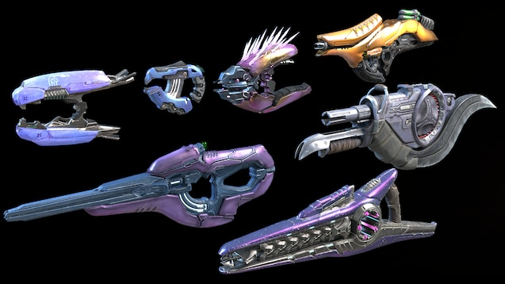Plasma Weapons
The Physics: Plasma is a partially ionized gas in which a certain proportion of electrons are free of their atomic orbits. The Covenant military uses plasma as a weapon form to terrifying effect, containing and guiding it in the form of a single bolt, beam, or continuous stream.
The Weapons: Plasma-based weapons are the most common armament of Covenant infantry and vehicular forces, and the main armament of their warships. The plasma is stabilized using magnetic fields; without the field, the plasma dissipates too quickly to be of any real use.
Needle Weapons
Needle weapons utilize an unknown mineral that Marines call "Blamite." This crystalline, high-explosive material is capable of penetrating targets and causing explosive damage upon detonation.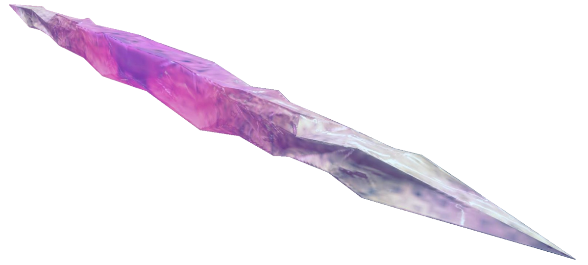
Brute Weapons
on the other end of the spectrum is the somewhat more primitive brute weapons. Brute weapons utilize phisicle projectiles much like our own firearms. a common weapon employed by them is the type-25 carbine, or the spiker. The spike ammunition is a tungstun like alloy it is coated with an unknown pyrophoric compound. When fired, the coating burns with a white-hot intensity once exposed to atmospheric oxygen, rendering the spikes superheated and semi-molten. They are capable of piercing flesh, bone, armor, and even the concrete wall behind you. When fired directly at a surface, the spikes will embed themselves in most substances including concrete and metal, crumpling on impact. However, when fired at an angle, they are capable of ricocheting. he spikes are large enough that they can be pulled out of the target's body with seemingly minimal fragmentation.
Treating injuries
if you or someone is struck by plasma it is inportant not to panic first get to a safe location preferably one away from the enemys sight and near an Opticam medkit station, these easy steps could save your life
Treating Plasma injuries
Plasma injuries, often resulting from exposure to high-energy plasma sources are comparable to third-degree burns. These injuries can cause severe damage to the skin, underlying tissues, and may require immediate and comprehensive medical attention.
- Ensure the area is safe from further plasma exposure before attending to the victim.
- -If clothing is on fire or in contact with plasma, extinguish flames or remove the clothing carefully, avoiding further injury.
- -Check for the extent of the burn, depth, and affected area
- -Look for signs of shock (e.g., rapid heartbeat, shallow breathing, confusion)
- -Identify any additional trauma, such as fractures or internal injuries.
- -Use cool (not cold) water to gently rinse the burn for at least 10-20 minutes. This helps reduce temperature and alleviates pain.
- -Do not use ice, as it can cause further tissue damage.
- -Gently clean the affected area with mild soap and water. Avoid scrubbing or applying alcohol, which can irritate the burn.
- -Use sterile, non-adhesive dressings to cover the burn. Avoid using materials that can stick to the wound.
- -Change dressings as needed if they become wet or dirty.
- -Apply topical antibiotics to prevent infection, especially if the skin barrier is broken. Administer over-the-counter pain relievers like ibuprofen or acetaminophen as needed. For severe pain, bio-foam or medigel is preferable.
- 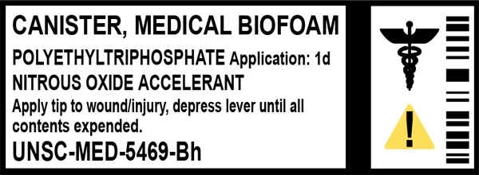
- Biofoam (short for biomedical foam) is a self-sealing, space-filling coagulant and an antimicrobial, tissue-regenerative foam polymeris. the foam keeps damaged organs in place and helps stop bleeding and hemorrhaging. The medicinal compound is morphophetamine in a polyethyltriphosphate liquid medium dispensed with nitrous oxide. When applied, the polyethyltriphosphate and nitrous oxide mix to create a foaming effect that can encapsulate, disinfect, and numb wounds. , biofoam is an OTC-legal product and can be purchased legally "over-the-counter."
- MediGel is a topical healing agent produced by Optican. It is advanced enough to heal various kinds of wounds, from blunt trauma to plasma burns.
- Every pack of MediGel has a five-step instruction sheet on how to apply the gel: 1.Clean area around the wound before applying gel. 2.Dispense gel by pressing button below. 3.Rub gel into wounded area for 30 seconds. 4.Gel will heal most wounds within 5 minutes of application. 5.If wound is not healed within specified time seek medical help. MediGel is similar to UNSC biofoam. They both are used in cases where medics are not available. However, unlike Biofoam, MediGel does not pack or put pressure on the wound. Biofoam is injected or sprayed into wounds, whilst Medigel is rubbed onto a wound, bruise, or burn. First aid stations are in fixed terminals with two sockets for health packs. There are many of these stations in the citys of numerous Colonies look for the optican logo. They promise to give an accurate diagnosis, or refund the customer. in the event of a Covenent attack a 100% discount will be aplied to all healthcare terminals.
- -Plasma injuries are serious and may require specialized care in a burn unit or trauma center. Always prioritize getting the injured person to medical professionals as soon as possible.
Glassing
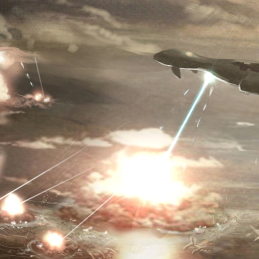Orbital Plasma Bombardment
The term "glassing" refers to the act by which the Covenant's ships bombard a planet from orbit using heavy plasma weaponry. This process converts the planet's surface into a glass-like substance called lechatelierite, effectively rendering it uninhabitable.
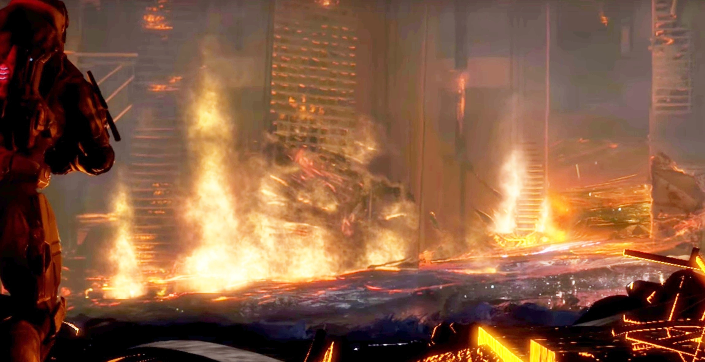The first and the most commonly used method is when the Covenant's large warships aim their plasma turrets toward the planet's surface and build up plasma along their lateral lines. The plasma is then discharged in lances from the warship as it continues to orbit the planet. Contained within a magnetic bubble, the lances are guided towards the surface by the ship's automation, striking an area and converting the top soil and other surface geology into a mineral called lechatelierite, similar to glass. The process also vaporizes any bodies of water the planet may possess, leaving at most small, ash-choked pools. The ecosystem of a planet is also disposed of through this process. This is repeated until every square millimeter of the planet is destroyed; depending on the planet, the technology and the number of ships in the Covenant fleet, it takes between a few hours and two days to glass a planet.
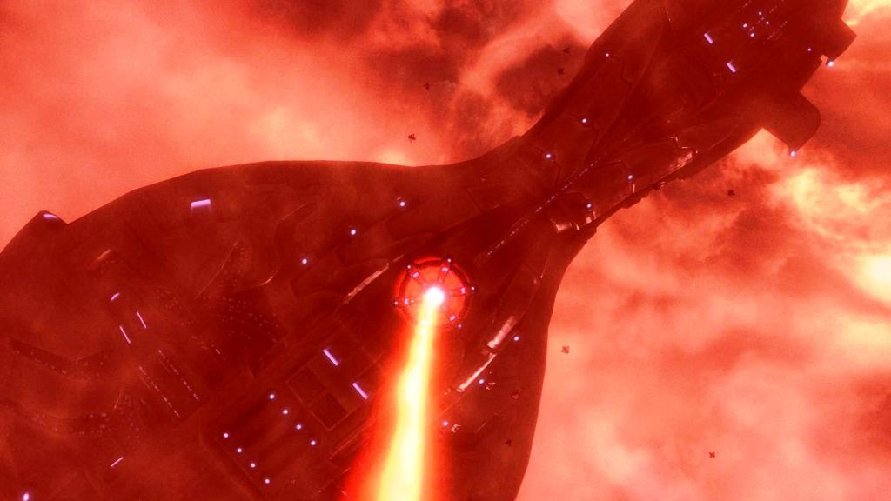The impact of the plasma bolt is similar to that of a nuclear detonation on a much different scale. When the plasma bolt impacts the surface, the magnetic field sustaining and guiding the plasma collapses, and, depending on how powerful the release of energy is, the initial zone of impact is obliterated instantly. The areas outside of the initial impact zone are affected by the heat wave generated by the blast; depending on the range, those immediately outside the blast zone are usually killed instantly by the intense heat. As thermal expansion takes over, the resulting flames fan out and create a pyroclastic surge, which will continue to burn the areas it comes into contact with until it has cooled enough that it cannot harm the surface. Subsequently, the atmosphere is saturated with soot and ash thrown up from the initial impact, subjecting the planet to a nuclear winter. As the initial impact area cools, the surface is covered by extensive areas of molten soil, and is comparable to active volcanic sites. The destructive process leaves the planet unable to recover to its former state. The atmospheres of most planets boil away from the process, though there are exceptions, the most notable being Reach
Once a planet has been glassed, all life on the surface is melted or vaporised. Life cannot grow again without the use of re-terraforming. Once the surface has cooled down and hardened, the result is lechatelierite, which is similar to glass.the following is a list of planets glased by the Covanant.
- 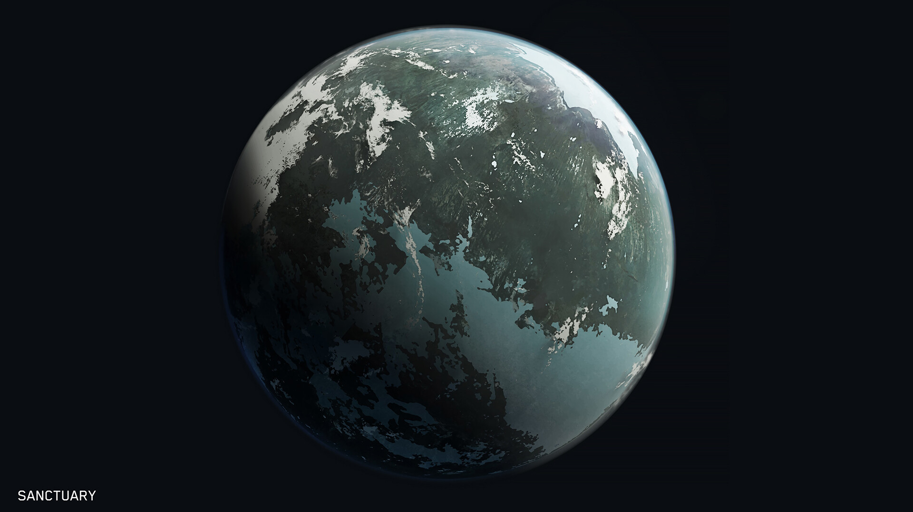
- 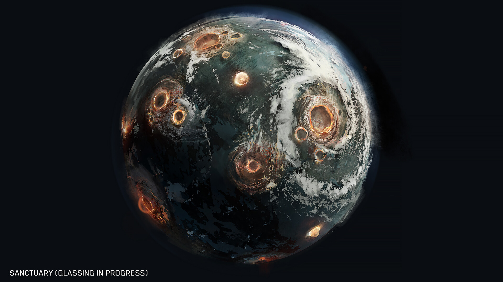
- 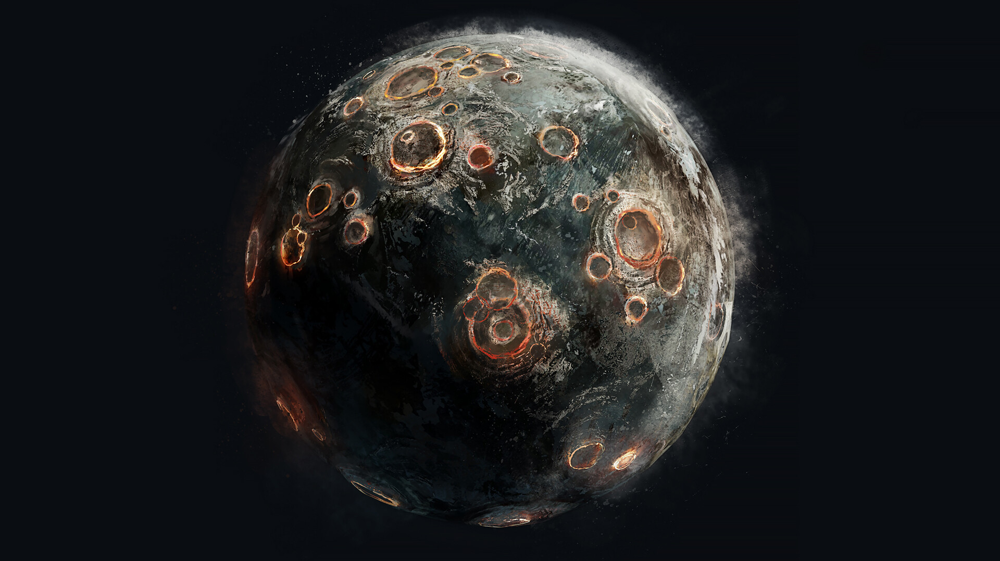
glassed worlds
- 2525: Harvest (partially), Green Hills, Redstow VI
- 2526: Biko, Bliss, Circinius IV (partially), Etalan, Mesra, Second Base
- 2528: Madrigal
- 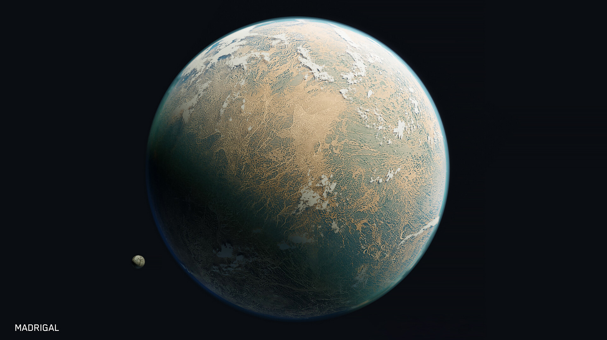
- 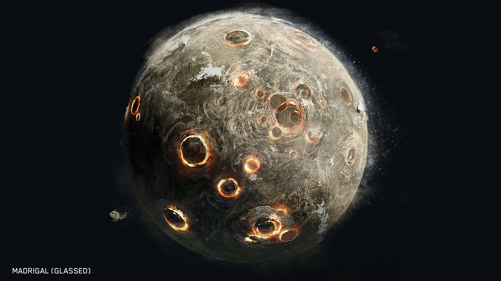
- 2529: Asmara, Cote d'Azure, Verent
- 2530: Dwarka, Endymion, Eridanus II, Lostwithiel
- 2533: Hat Yai, Paradise Falls
- 2534: Harvest (final)
- 2535: Charybdis IX, Eirene, Groombridge, Jericho VII
- 2537: Two out of three of the colony worlds in the Leonis Minoris star system
- 2538: New Harmony
- 2539: Amadora, Herschel, Kholo, New Constantinople
- 2540: Cyrus VII, Persia IX
- 2541: Hellas, Sanctuary
- 2543: Alluvion
- 2544: Miridem
- 2545: Actium, Draco III (partially)
- 2546: Camber, New Llanelli, Sansar
- 2547: Hardscrabble, Skopje
- 2548: Bounty, Reynes, Ruthersburg
- 2549: Arcadia, Cleyell (partially), Estuary, Greydowns, Iota, Kroedis II, Mesa, Paris IV
- 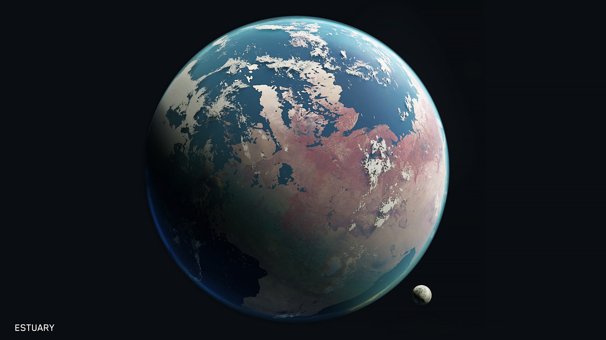
- 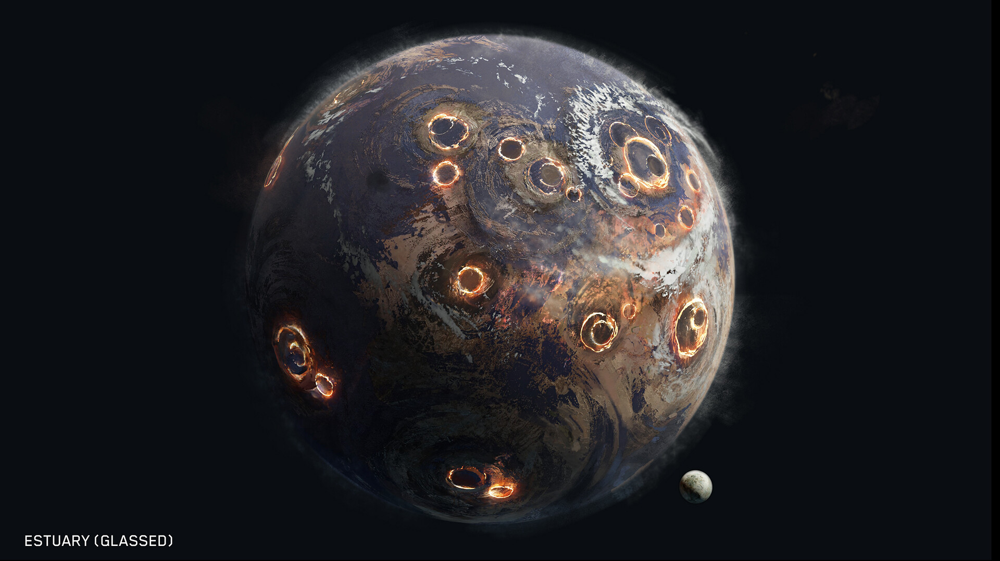
- 2550: Minab
- 2551: Imber, Meridian
- 2552: Coral, Earth (partially), Fumirole, Harmony, Reach, Tantalus, Tribute (partially), Troy
Advice to Civilians
In the event of an orbital plasma bombardment, civilians must immediately proceed to the nearest designated fallout shelter. Remain sheltered until official communications declare it safe to emerge.